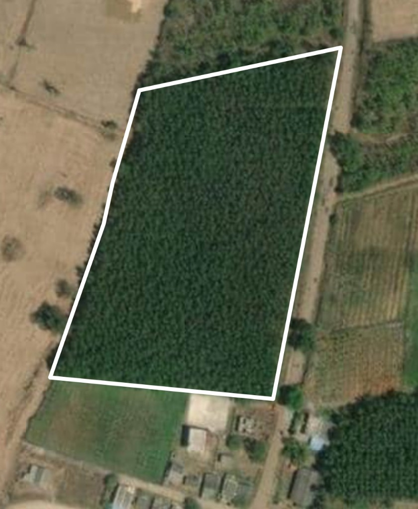
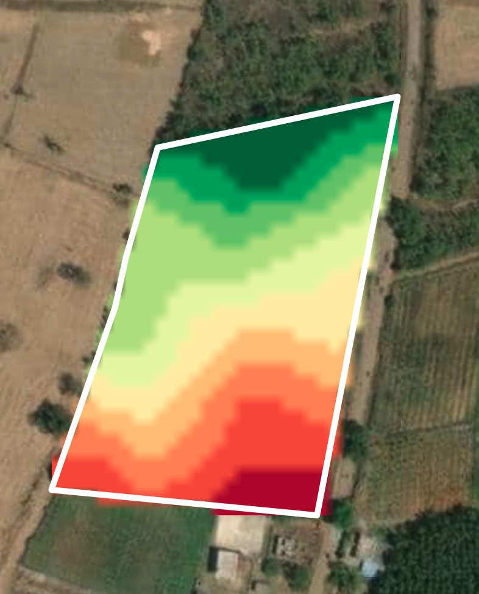
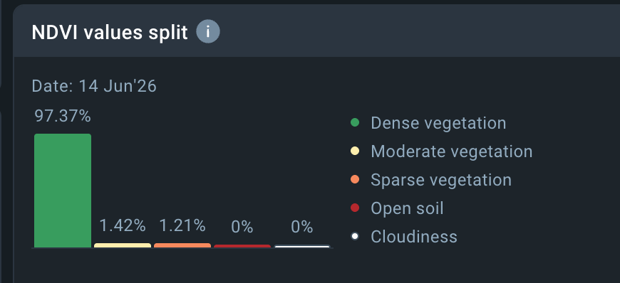
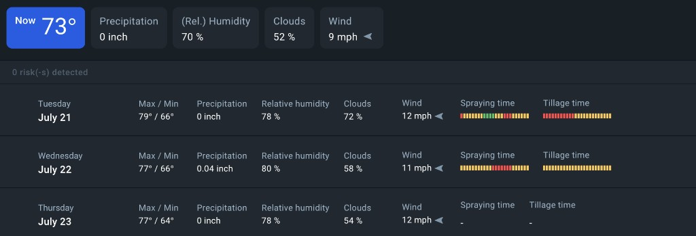

Farm Monitoring
Batch CC-AR-2026-0048124°C
Sunny · Ideal for cherry development

Crop Health
95% Good
Shade-grown Arabica canopy is thriving across the verified plot.
Wind
4 m/s
Stable breeze · low disease pressure risk.
Temperature
22°C
Ideal band 18–24°C for Arabica quality.
Soil pH
6.2
Lateritic soil · high organic matter.
Humidity
70%
Within shade-grown comfort range.
Soil Moisture
62%
No irrigation alert · monsoon residual OK.
Evidence stream
-
Soil Moisture Probe SM-147-01 · Block A NorthActive
-
Canopy Temp Sensor CT-147-02 · Shade beltActive
-
Humidity Node RH-147-03 · Mid slopeActive
-
Digital Moisture Meter Harvest capture · auto uploadLinked
-
Weighbridge Scale Collection · auto weightLinked
-
Field Camera CAM-1 · Cherry maturityLive

Passport journey
-
Farm boundary verified GPS polygon · officer confirmed
-
Growing season profile NDVI + weather synced
-
Harvest batch CC-AR-2026-00481 Moisture 11.2% · Premium Export
-
Continental Line 3 + Lab EU acceptance 99%
-
Ocean voyage watch Arabian Sea · ETA 11 days
India → Karnataka → Kodagu → Farm 147. One verified coffee plantation digital twin for Continental Coffee.
Farm identity
- Owner
- Reliability96%
- Variety
- Previous qualityAA / 84–86
Satellite, rainfall, temperature, humidity, and vegetation index assembled into a living crop profile.
Crop health
95%
Dense canopy across verified plot
Expected harvest
2.4 MT
Farm contribution to SHIP-2026-00081
Risk
Low
0 disease alerts detected
NDVI values split

Weather & activity

- Now73°F
- Humidity70%
- Precipitation0 inch
- Wind9 mph
Mobile capture recorded GPS, time, farmer, field, photos, weight, and moisture—no manual typing.
- Farmer
- Field
- Weight1840 kg
- Moisture11.2%
- Photos / video6 · on
- GPS verifiedYes
AI evaluation
Premium Export
Export quality Excellent · Specialty grade High · Moisture 11.2%
Continental Coffee processing, lab AI, packaging, warehouse, container IoT, and ocean guidance—one chain.
Transport
Harvest complete
Farm 147 · 12 Jan 2026 · 07:42 IST
Truck KA-12-AB-4481
Suresh N. · Arr 18:05 · 24°C / 62% RH
Continental plant
Kushalnagar · Line 3
Processing · Line 3
- Operator
- Defects
- Uniformity
- Dates
Lab AI
Approve
EU acceptance 99% · Rejection 0.8% · Shelf life 14 months · Plantation AA
Lab results
- Moisture
- Density
- Screen
- Ochratoxin
- Pesticides
- Heavy metals
Container & ocean
- Container
- Seal
- IoT temp / RH18.4°C / 55%
- Position
- ETA11 days · Hamburg
- Quality riskNone
Customs documents
One secure link instead of 50 PDFs. AI recommends Accept Shipment for the European roaster in Hamburg.
AI recommendation
Accept Shipment
Continental Coffee · Farm 147 · Quality 98% · Certificates valid · Roasting performance Excellent
Should you buy from Continental Coffee again?
Increase annual contract by 30%
Evidence across farm, processing, lab, and voyage—not a one-off certificate.
NIVI Passports is moving from event tracking to critical trade infrastructure—autonomous decisions, regulatory digital twins, rural IoT, open interoperability, carbon proof, and first-mile truth.
AI Conversational agronomy assistant
Not just 95% health—why, and what next
1 Autonomous decisions
Generative AI agents explain health changes, compare intervention scenarios, and can schedule irrigation or pest control—not only display a score.
- ModeAdvisory → Autopilot
- ActionsIrrigate · Scout · Alert
- OwnerHuman confirms exceptions
2 Mandatory digital twin
EUDR and similar laws require parcel-level, deforestation-free proof. Batch-to-land twins become a market-access requirement—not optional branding.
- EUDR statusReady path
- Parcel linkFarm 147 · Block A
- ProofGPS + sat history
3 Rural IoT · LoRaWAN
LPWAN / NB-IoT makes 90% automatic capture affordable for smallholder cooperatives across miles of farmland—without expensive cellular.
- NetworkLoRaWAN / NB-IoT
- Nodes online6 / 6
- Auto captureTarget 90%
4 Open interoperability
The OS model wins when farm data talks to shipper logistics and retailer inventory in real time via open APIs—ending soil/logistics point solutions.
- APIsFarm · Plant · Ocean
- PartnersShipper · Retailer
- StandardEvent + batch schema
5 Carbon as a service
Growing-season and voyage sensors feed verified sustainability reports. Buyers ask for carbon per mile—platforms that answer command premiums.
- Batch CO₂e1.84 t (est.)
- ScopeFarm → Hamburg
- ReportAuto draft ready
6 First-mile truth
Blockchain certificate chains at farm registration and harvest lock GPS, scale, and moisture evidence so organic or origin claims can’t be rewritten later.
- AnchorHarvest event hash
- BatchCC-AR-2026-00481
- IntegrityImmutable first mile
Why this matters for Continental Coffee
Product Intelligence becomes the critical infrastructure to sell into Europe: prove the land, prove the journey, prove the carbon, and let AI recommend the next action—not just store PDFs.
Conversational product intelligence for this passport. Ask about Farm 147, crop health, lab risk, EUDR, carbon, or whether to accept the shipment—demo replies use synthetic batch data.